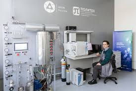

Внедрение нового оборудования в ИТ-инфраструктуру Санкт-Петербургского политехнического университета Петра Великого
О проекте
Санкт-Петербургский политехнический университет Петра Великого — один из ведущих технических вузов России. В связи с моральным устареванием и техническим износом действующего парка оборудования потребовалось обновление ИТ-инфраструктуры.
Задача
Оснащение компьютерами рабочих мест администрации, научных сотрудников и профессорско-преподавательского состава:
- Замена устаревшего компьютерного оборудования
- Интеграция нового оборудования в существующую ИТ-инфраструктуру
- Обеспечение совместимости с ПО университета
- Соблюдение политик информационной безопасности
- Минимизация времени простоя рабочих мест
Решение
Команда X-Com выполнила комплекс работ по модернизации ИТ-инфраструктуры университета:
Этапы реализации


Выполненные работы:
- Предпроектное обследование ИТ-инфраструктуры университета
- Формализация требований к составу и характеристикам оборудования
- Интеграция оборудования, пуско-наладочные работы
- Настройка групповых политик доменов
- Тестирование работоспособности всех систем
Результат
Модернизация парка клиентского оборудования повысила стабильность рабочих процессов сотрудников университета, снизила риски повреждения и утраты критически важных данных.
>50
Новых компьютеров
<1 нед.
Срок реализации
100%
Соответствие требованиям
0
Простоев
Использованное оборудование и ПО
Ключевые преимущества решения:
- Полное соответствие требованиям программного обеспечения университета
- Соблюдение действующих политик информационной безопасности
- Повышение стабильности рабочих процессов
- Снижение рисков потери данных